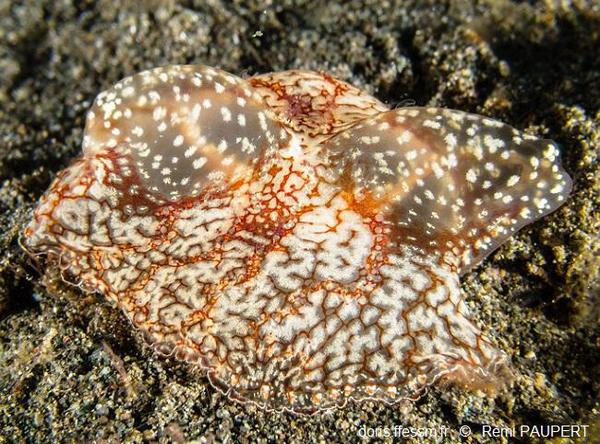
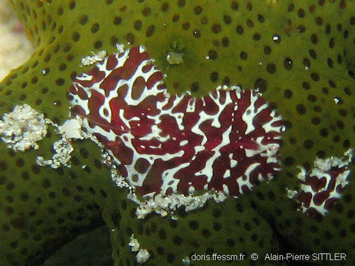

RECONNAÎTRE LES ANIMAUX MARINS ... pas si simple!
Cténaires
Les Cténaires, aussi appelés cténophores, sont des animaux marins vivant dans les eaux du large et pouvant se rapprocher des côtes avec les courants. Ils se nourrissent grâce à des cellules collantes, les colloblastes. Ils ont également la capacité de produire de la lumière. Ces organismes sont bien souvent confondus avec des méduses (Cnidaires), mais ne font pas partie du même embranchement.
Les cténophores sont des organismes marins prédateurs de petite taille qui ont une vague ressemblance avec les méduses. Ils constituent une grande part de la biomasse planctonique des océans de la planète. Leur nom provient de la structure en peigne des cils locomoteurs disposés en rangées quasi-symétriques. Au contraire des méduses, les cténaires ne possèdent pas de cnidocytes qui sont des cellules urticantes, mais des colloblastes qui elles, sont des cellules collantes. Les cténaires les plus connues sont la groseille de mer et la ceinture de Vénus. Toutes les espèces sont hermaphrodites.
Mode de vie des cténaires Bien que les cténophores se laissent dériver à la surface des océans par les courants marins, ils sont capables de nager. Ils se propulsent grâce à l'action de leurs cils preignés locomoteurs disposés le long des flancs. Leur corps est translucide et ressemble à une gélatine iridescente. Certains produisent de la lumière par bioluminescence, d'autres la réfléchissent et la diffusent sous forme d'éclairs colorés lors de leurs déplacements. On les trouve dans tous les océans du globe jusqu'à 4.000 mètres de profondeur, et ils fréquentent aussi bien les eaux océaniques que les eaux saumâtres des estuaires. Ils sont particulièrement abondant sous les tropiques et au niveau des deux pôles.
|  |  |